SubsetInverseSampling¶
-
class
otsubsetinverse.SubsetInverseSampling(*args)¶ Subset inverse simulation.
Parameters: - event :
Event Event we are computing the probability of. The threshold of the event is not used.
- targetProbability : float
The wanted final probability.
- proposalRange : float, optional
Proposal range length
- conditionalProbability : float, optional
Value of 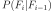 between successive steps
See also
openturns.SimulationNotes
The goal is to estimate the threshold of the following target probability :
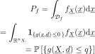
The idea of the subset simulation method is to replace simulating a rare failure event in the original probability space by a sequence of simulations of more frequent conditional events 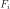 :
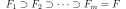
The original probability estimate rewrites :
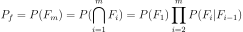
And each conditional subset failure region is chosen by setting the threshold 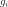 so that leads to a conditional failure probability of order 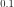 :
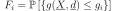
The conditional samples are generated by the means of Markov Chains, using the Metropolis Hastings algorithm.
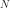 being the number of simulations per subset, and 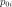 the conditional probability of each subset event, and 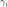 the autocorrelation between Markov chain samples.
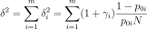
The first event 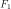 not being conditional, 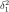 expresses as the classic Monte Carlo c.o.v.
Examples
>>> import openturns as ot >>> import otsubsetinverse as otsi
>>> ot.RandomGenerator.SetSeed(0)
Create a performance function with an associated distribution.
>>> limitState = ot.SymbolicFunction(['u1', 'u2'], ['u1-u2']) >>> dim = limitState.getInputDimension() >>> mean = ot.Point([7., 2.]) >>> sigma = ot.Point(dim, 1.0) >>> R = ot.IdentityMatrix(dim) >>> myDistribution = ot.Normal(mean, sigma, R) >>> vect = ot.RandomVector(myDistribution) >>> output = ot.RandomVector(limitState, vect)
Create an event with a fictional threshold value which will not be used.
>>> myEvent = ot.Event(output, ot.Less(), 0.)
Define the target probability for which the threshold will be computed.
>>> targetProbability = 0.0002 >>> mySS = otsi.SubsetInverseSampling(myEvent, targetProbability) >>> mySS.setMaximumOuterSampling(10000) >>> mySS.run()
Get some results.
>>> ResultSS = mySS.getResult() >>> print('Pf = {}'.format(ResultSS.getProbabilityEstimate())) Pf = 0.0002 >>> print('Threshold = {}'.format(mySS.getThresholdPerStep()[-1])) Threshold = 0.0202715501987 >>> print('Threshold confidence length = {}'.format( ... mySS.getThresholdConfidenceLength(0.90))) Threshold confidence length = 0.0244117131807
Methods
getBlockSize()Accessor to the block size. getClassName()Accessor to the object’s name. getCoefficientOfVariationPerStep()Coefficient of variation per step accessor. getConditionalProbability()Conditional probability accessor. getConvergenceStrategy()Accessor to the convergence strategy. getEventInputSample()Input sample accessor. getEventOutputSample()Output sample accessor. getGammaPerStep()Autocorrelation accessor. getId()Accessor to the object’s id. getInputSample()All input sample accessor. getMaximumCoefficientOfVariation()Accessor to the maximum coefficient of variation. getMaximumOuterSampling()Accessor to the maximum sample size. getMaximumStandardDeviation()Accessor to the maximum standard deviation. getName()Accessor to the object’s name. getNumberOfSteps()Subset steps number accesor. getOutputSample()All output sample accessor. getProbabilityEstimatePerStep()Probability estimate accessor. getProposalRange()Proposal range length accessor. getShadowedId()Accessor to the object’s shadowed id. getTargetProbability()Final target probability accessor. getThresholdCoefficientOfVariationPerStep()Threshold coefficient of variation per step accessor. getThresholdConfidenceLength(*args)Accessor to the confidence length of the threshold. getThresholdPerStep()Threshold accessor. getVerbose()Accessor to verbosity. getVisibility()Accessor to the object’s visibility state. hasName()Test if the object is named. hasVisibleName()Test if the object has a distinguishable name. run()Launch simulation. setBetaMin(*args)Radius of the hypershere accessor. setBlockSize(*args)Accessor to the block size. setConditionalProbability(*args)Conditional probability accessor. setConvergenceStrategy(*args)Accessor to the convergence strategy. setISubset(*args)Conditonal simulation activation accessor. setKeepEventSample(*args)Sample storage accessor. setMaximumCoefficientOfVariation(*args)Accessor to the maximum coefficient of variation. setMaximumOuterSampling(*args)Accessor to the maximum sample size. setMaximumStandardDeviation(*args)Accessor to the maximum standard deviation. setName(*args)Accessor to the object’s name. setProgressCallback(*args)Set up a progress callback. setProposalRange(*args)Proposal range length accessor. setShadowedId(*args)Accessor to the object’s shadowed id. setStopCallback(*args)Set up a stop callback. setTargetProbability(*args)Final target probability accessor. setVerbose(*args)Accessor to verbosity. setVisibility(*args)Accessor to the object’s visibility state. getEvent getResult -
__init__(*args)¶ x.__init__(…) initializes x; see help(type(x)) for signature
-
getBlockSize()¶ Accessor to the block size.
Returns: - blockSize : int
Number of terms in the probability simulation estimator grouped together. It is set by default to 1.
-
getClassName()¶ Accessor to the object’s name.
Returns: - class_name : str
The object class name (object.__class__.__name__).
-
getCoefficientOfVariationPerStep()¶ Coefficient of variation per step accessor.
Returns: - coef :
openturns.Point Coefficient of variation at each subset step.
- coef :
-
getConditionalProbability()¶ Conditional probability accessor.
Value of between successive steps.
Returns: - prob : float
Conditional probability value.
-
getConvergenceStrategy()¶ Accessor to the convergence strategy.
Returns: - storage_strategy :
HistoryStrategy Storage strategy used to store the values of the probability estimator and its variance during the simulation algorithm.
- storage_strategy :
-
getEventInputSample()¶ Input sample accessor.
Returns: - inputSample :
openturns.Sample Input sample.
- inputSample :
-
getEventOutputSample()¶ Output sample accessor.
Returns: - outputSample :
openturns.Sample Ouput sample.
- outputSample :
-
getGammaPerStep()¶ Autocorrelation accessor.
Returns: - prob :
openturns.Point Autocorrelation values.
- prob :
-
getId()¶ Accessor to the object’s id.
Returns: - id : int
Internal unique identifier.
-
getInputSample()¶ All input sample accessor.
Returns: - inputSample :
openturns.Sample Input sample.
- inputSample :
-
getMaximumCoefficientOfVariation()¶ Accessor to the maximum coefficient of variation.
Returns: - coefficient : float
Maximum coefficient of variation of the simulated sample.
-
getMaximumOuterSampling()¶ Accessor to the maximum sample size.
Returns: - outerSampling : int
Maximum number of groups of terms in the probability simulation estimator.
-
getMaximumStandardDeviation()¶ Accessor to the maximum standard deviation.
Returns: - sigma : float, 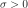
Maximum standard deviation of the estimator.
-
getName()¶ Accessor to the object’s name.
Returns: - name : str
The name of the object.
-
getNumberOfSteps()¶ Subset steps number accesor.
Returns: - n : int
Number of subset steps.
-
getOutputSample()¶ All output sample accessor.
Returns: - outputSample :
openturns.Sample Output sample.
- outputSample :
-
getProbabilityEstimatePerStep()¶ Probability estimate accessor.
Returns: - prob :
openturns.Point Probability estimate values.
- prob :
-
getProposalRange()¶ Proposal range length accessor.
Returns: - range : float
Range length.
-
getShadowedId()¶ Accessor to the object’s shadowed id.
Returns: - id : int
Internal unique identifier.
-
getTargetProbability()¶ Final target probability accessor.
Value of 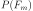.
Returns: - prob : float
Final target probability value.
-
getThresholdCoefficientOfVariationPerStep()¶ Threshold coefficient of variation per step accessor.
Returns: - coef :
openturns.Point Coefficient of variation at each subset step.
- coef :
-
getThresholdConfidenceLength(*args)¶ Accessor to the confidence length of the threshold.
Parameters: - level : float, 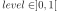
Confidence level. By default, it is 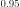.
Returns: - confidenceLength : float
Length of the confidence interval at the confidence level level.
-
getThresholdPerStep()¶ Threshold accessor.
Returns: - threshold :
openturns.Point Threshold values.
- threshold :
-
getVerbose()¶ Accessor to verbosity.
Returns: - verbosity_enabled : bool
If True, the computation is verbose. By default it is verbose.
-
getVisibility()¶ Accessor to the object’s visibility state.
Returns: - visible : bool
Visibility flag.
-
hasName()¶ Test if the object is named.
Returns: - hasName : bool
True if the name is not empty.
-
hasVisibleName()¶ Test if the object has a distinguishable name.
Returns: - hasVisibleName : bool
True if the name is not empty and not the default one.
-
run()¶ Launch simulation.
See also
setBlockSize,setMaximumOuterSampling,ResourceMap,SimulationResultNotes
It launches the simulation on a sample of size at most outerSampling * blockSize, this sample being built by blocks of size blockSize. It allows to use efficiently the distribution of the computation as well as it allows to deal with a sample size 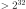 by a combination of blockSize and outerSampling.
-
setBetaMin(*args)¶ Radius of the hypershere accessor.
Parameters: - beta : float
Radius value of the exclusion hypershere when the conditional simulation is activated.
-
setBlockSize(*args)¶ Accessor to the block size.
Parameters: - blockSize : int, 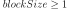
Number of terms in the probability simulation estimator grouped together. It is set by default to 1.
Notes
For Monte Carlo, LHS and Importance Sampling methods, this allows to save space while allowing multithreading, when available we recommend to use the number of available CPUs; for the Directional Sampling, we recommend to set it to 1.
-
setConditionalProbability(*args)¶ Conditional probability accessor.
Value of between successive steps.
Parameters: - prob : float
Conditional probability value.
-
setConvergenceStrategy(*args)¶ Accessor to the convergence strategy.
Parameters: - storage_strategy :
HistoryStrategy Storage strategy used to store the values of the probability estimator and its variance during the simulation algorithm.
- storage_strategy :
-
setISubset(*args)¶ Conditonal simulation activation accessor.
Parameters: - isubset : bool
Activate or not the conditional simulation for the first step of the simulation.
-
setKeepEventSample(*args)¶ Sample storage accessor.
Parameters: - prob : bool
Whether to keep the event samples.
-
setMaximumCoefficientOfVariation(*args)¶ Accessor to the maximum coefficient of variation.
Parameters: - coefficient : float
Maximum coefficient of variation of the simulated sample.
-
setMaximumOuterSampling(*args)¶ Accessor to the maximum sample size.
Parameters: - outerSampling : int
Maximum number of groups of terms in the probability simulation estimator.
-
setMaximumStandardDeviation(*args)¶ Accessor to the maximum standard deviation.
Parameters: - sigma : float,
Maximum standard deviation of the estimator.
-
setName(*args)¶ Accessor to the object’s name.
Parameters: - name : str
The name of the object.
-
setProgressCallback(*args)¶ Set up a progress callback.
Parameters: - callback : callable
Takes a float as argument as percentage of progress.
-
setProposalRange(*args)¶ Proposal range length accessor.
Parameters: - range : float
Range length.
-
setShadowedId(*args)¶ Accessor to the object’s shadowed id.
Parameters: - id : int
Internal unique identifier.
-
setStopCallback(*args)¶ Set up a stop callback.
Parameters: - callback : callable
Returns an int deciding whether to stop or continue.
-
setTargetProbability(*args)¶ Final target probability accessor.
Value of .
Parameters: - prob : float
Final target probability value.
-
setVerbose(*args)¶ Accessor to verbosity.
Parameters: - verbosity_enabled : bool
If True, make the computation verbose. By default it is verbose.
-
setVisibility(*args)¶ Accessor to the object’s visibility state.
Parameters: - visible : bool
Visibility flag.
- event :